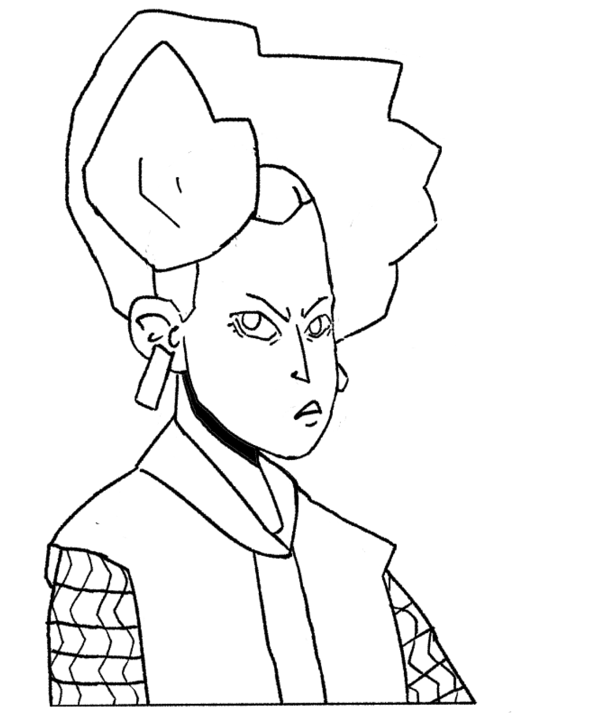

Stefan Lucas
Especialista em Desenvolvimento de Games pela UNOPAR, Bacharel em Ciência da Computação pelo Centro Universitário Luterano de Palmas, Membro do Grupo de Estudos em Novas Tecnologias para Processos de Ensino e Aprendizagem GENTE do CEULP, Atuando
principalmente nos seguintes temas: Lógica de predicados como monitor da Disciplina, Desenvolvimento de jogos 2D e Plataforma Gamificada pelo PROICT como desenvolvedor. Atualmente Quality Assurance (QA) na CRP Tecnologia.


